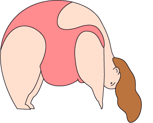
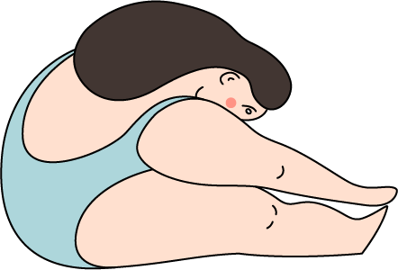

能量消耗
能量消耗的方式共分为三大部分: 基础代谢、身体活动消耗、食物热效应。

基础代谢：占每日热量支出的60%~75%,仅为维持人体正常机能所消耗的热量。身体活动消耗：占每日热量支出的15%~30%,由人体一天的额外活动总量决定。食物热效应：即消化吸收食物时，人体需要消耗的热量，约占每日热量支出的10%。
如何能量消耗
基础代谢与身高体重和瘦体重比例关系密切，增加肌肉量是人体增加基础代谢的最容易实现的方法，每增加1kg瘦体重，可以额外增加基础代谢100大卡左右，但是肌肉的增加不那么简单，需要配合严格的饮食和刻苦的训练还有日复一日的坚持才能实现。

一个正常身材的成年人有氧运动一小时所消耗的的热量大约在400大卡左右，大致相当于直接增加了大概4kg肌肉的基础代谢，所以有氧消耗依然是减肥期间优先推荐的运动。